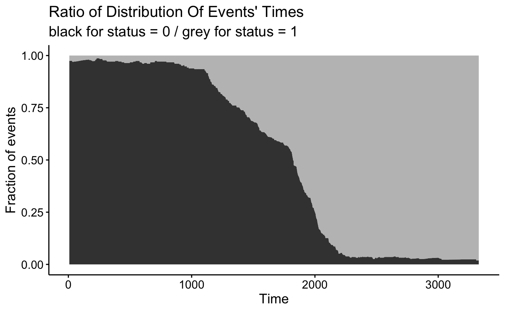
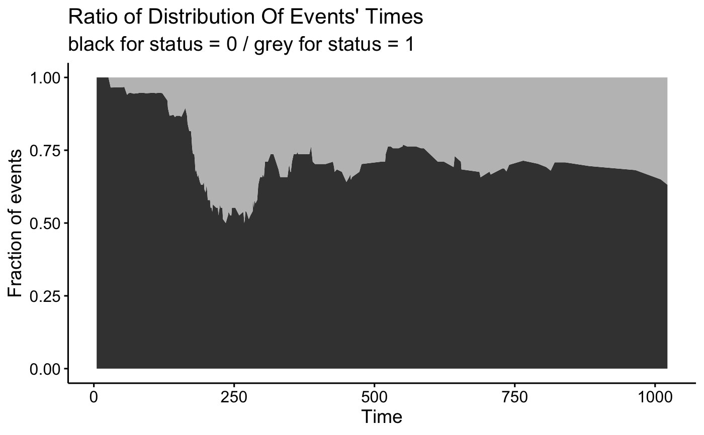

Distribution of Events' Times
Distribution of Events' Times
ggsurvevents(surv = NULL, fit = NULL, data = NULL, type = "fraction", normalized = TRUE, censored.on.top = TRUE, ggtheme = theme_survminer(), palette = c("grey75", "grey25"), ...)
Arguments
- surv
- an object of Surv. If not suplied, the censoring variable is extracted from the model.
- fit
- an object of class survfit.
- data
- a dataset for predictions. If not supplied then data will be extracted from `fit` object.
- type
- one of
c("cumulative", "radius", "fraction")."cumulative"stands for cumulative number of events,"radius"stands for number of events within a given radius, - normalized
- if
TRUErelative number of events is presented, - censored.on.top
- is TRUE then censored events are on the top
- ggtheme
- function, ggplot2 theme name. Allowed values include ggplot2 official themes: see theme.
- palette
- the color palette to be used for coloring of significant variables.
- ...
- other graphical parameters to be passed to the function ggpar.
Value
return an object of class ggplot
Examples
require("survival") # from Surv surv <- Surv(lung$time, lung$status) ggsurvevents(surv)surv2 <- Surv(colon$time, colon$status) ggsurvevents(surv2)ggsurvevents(surv2, normalized = TRUE)# from survfit fit <- survfit(Surv(time, status) ~ sex, data = lung) ggsurvevents(fit = fit, data = lung)#> Warning: The `surv` argument is not provided. The censored variable will be extracted from model fit.# from coxph model <- coxph( Surv(time, status) ~ sex + rx + adhere, data = colon ) ggsurvevents(fit = model, data = colon)#> Warning: The `surv` argument is not provided. The censored variable will be extracted from model fit.ggsurvevents(surv2, normalized = TRUE, type = "radius")ggsurvevents(surv2, normalized = TRUE, type = "fraction")